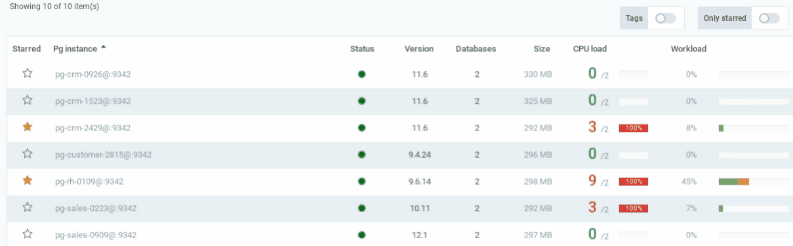

Release notes¶
Dec 09, 2020 (v2020.12)¶
Features
- Datasentinel can retrieve system metrics with the Agentless method if you install the system_stats extension
- Easily display the most frequently used Tables or Indexes (By disk reads, Cache activity or any other metric)
- New version name convention
May 11, 2020 (v1.6.0)¶
Features
- New Agentless version allowing you to monitor all kinds of PostgreSQL instances- AWS RDS, Aurora- Microsoft Azure database, hyperscale,- Google Cloud SQL and other cloud providers.It can also be used in your own environment. (See which method to use Agent-based or Agentless?Connections can be created either with the User interface connection managementor with the Connection API
User interface connection management¶

March 30, 2020 (v1.5.0)¶
Features
The Datasentinel extension is no longer required. (Required only when you choose the high level of collection). See Sessions workload
Fixes
Fix pagination on some dashboards in the UI.
Export your workload in PDF format¶
Select a PostgreSQL instance, a time window and the sections to export.

February 18, 2020 (v1.4.0)¶
Features
Added API to export metrics. See API
Query statistics display the minum and maximum execution time
Session workload sampling can be low (every 10 seconds) or high (every second). Updatable with the Agent
Fixes
Fix layout in the top queries dashboard
Fix tab layout in the instance dashboard

January 14, 2020 (v1.3.0)¶
Features
Fixes
In the Top queries dashboard, labels display the sql text (truncated if needed) instead of the query md5 id.
1. Execution plan viewer¶
The execution plans can be easily analyzed thanks to the plan viewer feature.
You can copy/paste an existing plan (format text or json) or view it directly in the execution plans dashboard

2. Index usage statistics¶
Index usage statistics are now available. You can see what are the most used indexes.

Fixes
In the Top queries dashboard, labels display the sql text (truncated if needed) instead of the query md5 id.
December 19, 2019 (v1.2.0)¶
Features
Fixes
When updating a user email, the user properties are lost
Home page reload does not work properly in some cases
1. Starred instances¶
The postgresql instances can be starred. You can choose to see your starred instances only
{kind=link}
2. Instance tags:¶
The instance tags can be displayed in the home page and in the instances dashboard. You can then easily filter by tag

Fixes
November 12, 2019 (v1.1.0)¶
Features
Upgrade to grafana 6.4.4
Developer or data admin user profile. A developer profile has only access to sessions workload and queries
Fixes
Query id with unkonwn filters
October 2019 (v1.0.0)¶
Features
Sessions workload
Sqls statistics
Instances, databases statistics
Powerfull filters
Consolidated or detailed view of the activity
Real time or past view with zooming feature on the desired periods